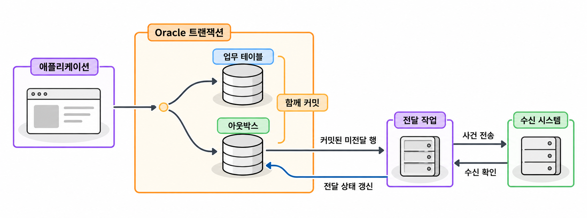

25장. 데이터 변경 추적과 감사 기록이란?
1. 변경 감지와 감사의 목적
1.1 변경 여부·변경 내용·변경 주체의 구분
변경 추적(change tracking)은 데이터가 바뀌었는지 확인하고, 필요한 변경 정보를 찾아내는 일입니다. 감사 기록(audit record)은 누가 어떤 작업을 했는지 나중에 확인할 수 있도록 남긴 기록입니다.
주문금액이 바뀌었을 때 다음 질문은 서로 다른 정보를 요구합니다.
| 구분 | 확인할 질문 | 필요한 정보 |
|---|---|---|
| 변경 여부 | 마지막 조회 이후 주문이 바뀌었는가? | 수정 시각, 버전 번호 |
| 변경 내용 | 주문금액이 얼마에서 얼마로 바뀌었는가? | 변경 전후 값, 작업 종류 |
| 변경 주체 | 누가 어떤 요청으로 바꾸었는가? | 업무 사용자, DB 접속 사용자, 요청 식별자 |
| 작업 시도 | 변경을 시도했지만 권한 부족으로 실패했는가? | 실행 작업, 성공·실패 정보 |
수정 시각만 저장하면 언제 바뀌었는지는 알 수 있습니다. 그러나 이전 금액이나 변경한 사용자는 알 수 없습니다. 행을 삭제하면 수정 시각도 함께 사라집니다.
요구사항에는 ‘변경을 추적한다’는 표현 대신 확인할 질문을 적습니다. ‘검색 시스템에 수정된 주문을 전달한다’와 ‘관리자의 금액 변경을 조사한다’는 목적이 다릅니다. 전달용 기록과 감사용 기록의 보관 기간도 따로 정해야 합니다.
1.2 생성·수정 시각과 버전 번호
생성 시각은 행이 만들어진 때를 나타냅니다. 수정 시각은 마지막으로 수정한 때를 나타냅니다. 두 시각은 행의 상태를 설명하는 기본 정보입니다.
| 컬럼 예 | 의미 | 설계할 규칙 |
|---|---|---|
created_at | 행을 생성한 시각 | 생성 후에는 유지 |
updated_at | 마지막 수정 시각 | 정해진 변경마다 갱신 |
version_no | 해당 행의 변경 버전 | 변경마다 1 증가 |
DEFAULT SYSTIMESTAMP는 입력 시 기본값을 제공합니다. 이후 UPDATE를 실행할 때 수정 시각을 자동으로 바꾸지는 않습니다. 수정 시각은 애플리케이션이나 트리거가 갱신하도록 정해야 합니다.
어떤 작업을 변경으로 볼지도 정합니다. 같은 금액을 다시 저장하는 작업까지 변경으로 볼 수 있습니다. 실제 값이 달라질 때만 수정 시각과 버전을 바꾸는 정책도 가능합니다.
버전 번호는 시각과 역할이 다릅니다. 서로 다른 변경의 시각이 같을 수 있습니다. 반면 행의 버전을 순서대로 증가시키면 읽었던 상태와 지금 상태가 같은지 비교할 수 있습니다.
코드 조각
UPDATE tracked_order
SET total_amount = :new_amount,
updated_at = SYSTIMESTAMP,
version_no = version_no + 1
WHERE order_id = :order_id
AND version_no = :read_version;애플리케이션은 변경된 행 수를 확인해야 합니다. 한 행이면 읽었던 버전을 기준으로 변경에 성공한 것입니다. 0행이면 행이 없거나 다른 작업이 먼저 버전을 바꾼 것입니다. 이때는 다시 조회하거나 사용자에게 충돌을 알려야 합니다.
이처럼 읽었던 버전으로 변경 가능 여부를 확인하는 방식을 낙관적 동시성 제어(optimistic concurrency control)라고 합니다. 모든 변경 경로가 같은 버전 증가 규칙을 따라야 효과가 있습니다.
행마다 따로 증가하는 버전 번호는 테이블 전체의 변경 순서를 나타내지 않습니다. 주문 A의 버전 8과 주문 B의 버전 3을 비교해 어느 주문이 나중에 변경되었는지 판단할 수는 없습니다.
1.3 애플리케이션 사용자와 DB 접속 사용자
웹 서비스에서는 여러 사용자의 요청을 하나의 DB 계정으로 실행하는 경우가 많습니다. 관리자가 주문을 수정해도 DB 접속 사용자는 공용 계정인 APP_USER로 보일 수 있습니다.
따라서 업무 사용자와 DB 접속 사용자를 나누어 기록합니다. 업무 사용자는 서비스에서 인증한 사용자입니다. DB 접속 사용자는 데이터베이스에 로그인한 계정입니다.
Oracle에서는 SYS_CONTEXT('USERENV', 'SESSION_USER')로 DB 접속 사용자를 확인합니다. 업무 사용자 식별자를 세션에 전달할 때는 DBMS_SESSION.SET_IDENTIFIER를 사용할 수 있습니다.
코드 조각
BEGIN
DBMS_SESSION.SET_IDENTIFIER('operator_17');
END;
/
SELECT SYS_CONTEXT('USERENV', 'SESSION_USER') AS db_user,
SYS_CONTEXT('USERENV', 'CLIENT_IDENTIFIER') AS app_user
FROM dual;
BEGIN
DBMS_SESSION.CLEAR_IDENTIFIER;
END;
/CLIENT_IDENTIFIER는 애플리케이션이 설정하는 값입니다. 이 값 자체가 사용자 인증을 증명하지는 않습니다. 인증을 마친 서버 코드가 식별자를 설정하도록 해야 합니다.
커넥션 풀(connection pool)은 DB 접속을 보관했다가 여러 요청에 재사용하는 구조입니다. 접속을 빌릴 때 업무 사용자 식별자를 설정하고, 반환할 때 반드시 지워야 합니다. 예외가 발생해도 식별자를 지워야 다음 요청에 이전 사용자 정보가 남지 않습니다.
배치 작업에는 배치 실행 주체를 기록합니다. 운영자가 다른 사용자를 대신해 작업했다면 실제 작업자와 대상 사용자를 구분합니다. 요청 식별자까지 남기면 애플리케이션 로그와 DB 변경 기록을 연결할 수 있습니다.
2. 변경을 기록하는 방식
2.1 애플리케이션 기록과 DML 트리거
애플리케이션이 업무 데이터를 바꾸면서 로그를 직접 입력할 수 있습니다. 이 방식은 변경 사유와 요청 식별자 같은 업무 정보를 담기 좋습니다. 다만 운영 SQL이나 다른 프로그램이 테이블을 직접 변경하면 로그가 빠질 수 있습니다.
DML 트리거는 대상 테이블에 지정한 DML이 실행될 때 동작합니다. 활성화된 행 트리거는 영향을 받은 행마다 변경을 기록할 수 있습니다.
| 기준 | 애플리케이션 기록 | DML 트리거 |
|---|---|---|
| 업무 사유 파악 | 요청 정보를 직접 사용 | 세션 정보 등으로 전달받아야 함 |
| 직접 실행한 DML | 별도 기록 경로가 필요 | 대상 DML에 대해 자동 실행 |
| 코드 흐름 | 업무 코드에서 확인 | 트리거 정의도 함께 확인 |
| 처리 비용 | 로그 입력 비용 발생 | 행별 실행과 로그 입력 비용 발생 |
업무 변경과 로그 입력을 같은 트랜잭션으로 묶으면 함께 확정하거나 취소할 수 있습니다. 애플리케이션이 별도 접속으로 로그를 저장하면 두 작업을 함께 확정하거나 취소한다는 보장이 없습니다.
일반적인 DML 트리거가 기록한 로그도 원래 DML의 트랜잭션에 포함됩니다. 로그 입력 오류를 숨기지 않으면 해당 DML도 실패합니다. 감사 기록이 필수인 업무에서는 로그 입력에 실패했을 때의 처리 정책을 명확히 정해야 합니다.
자율 트랜잭션으로 로그만 별도 커밋하는 방식도 있습니다. 그러나 원래 변경이 취소되어도 로그는 남습니다. 확정된 변경을 기록하려는 목적이라면 일반 트랜잭션에 포함하는 편이 맞습니다. 실패한 시도를 보관하는 방법은 별도로 설계합니다.
2.2 감사 로그의 변경 전후 값·작업·대상 키
업무 변경 로그에는 어떤 대상에 무슨 일이 있었는지 남깁니다. 주문금액 변경을 기록한다면 다음 정보가 필요합니다.
| 항목 | 기록 예 | 용도 |
|---|---|---|
| 로그 식별자 | audit_id | 로그 한 건 식별 |
| 대상 키 | order_id | 변경 대상 식별 |
| 작업 종류 | I, U, D | 입력·수정·삭제 구분 |
| 변경 전후 값 | 이전 금액, 이후 금액 | 변경 내용 확인 |
| 변경 전후 버전 | 이전 버전, 이후 버전 | 같은 행의 변경 연결 |
| 기록 시각 | recorded_at | DML 기록 시점 확인 |
| 변경 주체 | DB 사용자, 업무 사용자 | 실행 주체 확인 |
Oracle의 행 트리거에서는 :OLD로 변경 전 값을, :NEW로 변경 후 값을 참조합니다.
| 작업 | :OLD | :NEW |
|---|---|---|
INSERT | 이전 행 없음 | 입력할 값 |
UPDATE | 변경 전 값 | 변경 후 값 |
DELETE | 삭제 전 값 | 이후 행 없음 |
다음 예제는 주문금액만 관리하는 독립적인 실습입니다. 실습 PDB의 계정에 CREATE TABLE, CREATE TRIGGER 권한과 저장공간이 필요합니다. 아래 객체 이름이 없는 상태에서 SQL Developer의 스크립트 실행으로 실행합니다.
예제 25-1 — 주문금액 변경과 감사 로그를 함께 기록하기
파일명: order_change_audit.sql
CREATE TABLE tracked_order (
order_id NUMBER PRIMARY KEY,
total_amount NUMBER(12, 0) NOT NULL,
created_at TIMESTAMP WITH TIME ZONE
DEFAULT SYSTIMESTAMP NOT NULL,
updated_at TIMESTAMP WITH TIME ZONE
DEFAULT SYSTIMESTAMP NOT NULL,
version_no NUMBER DEFAULT 1 NOT NULL,
CONSTRAINT ck_tracked_order_amount
CHECK (total_amount >= 0),
CONSTRAINT ck_tracked_order_version
CHECK (version_no >= 1)
);
CREATE TABLE order_change_audit (
audit_id NUMBER GENERATED ALWAYS AS IDENTITY PRIMARY KEY,
order_id NUMBER NOT NULL,
operation CHAR(1) NOT NULL,
old_amount NUMBER(12, 0),
new_amount NUMBER(12, 0),
old_version NUMBER,
new_version NUMBER,
recorded_at TIMESTAMP WITH TIME ZONE
DEFAULT SYSTIMESTAMP NOT NULL,
db_user VARCHAR2(128 CHAR) NOT NULL,
app_user VARCHAR2(64 BYTE),
CONSTRAINT ck_order_change_operation
CHECK (operation IN ('I', 'U', 'D'))
);
CREATE INDEX ix_order_change_target
ON order_change_audit (order_id, audit_id);
CREATE OR REPLACE TRIGGER trg_tracked_order_version
BEFORE INSERT OR UPDATE ON tracked_order
FOR EACH ROW
BEGIN
IF INSERTING THEN
:NEW.created_at := SYSTIMESTAMP;
:NEW.updated_at := :NEW.created_at;
:NEW.version_no := 1;
ELSE
:NEW.created_at := :OLD.created_at;
:NEW.updated_at := SYSTIMESTAMP;
:NEW.version_no := :OLD.version_no + 1;
END IF;
END;
/
CREATE OR REPLACE TRIGGER trg_tracked_order_audit
AFTER INSERT OR UPDATE OR DELETE ON tracked_order
FOR EACH ROW
DECLARE
v_operation CHAR(1);
v_order_id NUMBER;
BEGIN
IF INSERTING THEN
v_operation := 'I';
v_order_id := :NEW.order_id;
ELSIF UPDATING THEN
v_operation := 'U';
v_order_id := :NEW.order_id;
ELSE
v_operation := 'D';
v_order_id := :OLD.order_id;
END IF;
INSERT INTO order_change_audit (
order_id, operation,
old_amount, new_amount,
old_version, new_version,
db_user, app_user
)
VALUES (
v_order_id, v_operation,
:OLD.total_amount, :NEW.total_amount,
:OLD.version_no, :NEW.version_no,
SYS_CONTEXT('USERENV', 'SESSION_USER'),
SYS_CONTEXT('USERENV', 'CLIENT_IDENTIFIER')
);
END;
/
BEGIN
DBMS_SESSION.SET_IDENTIFIER('operator_17');
END;
/
INSERT INTO tracked_order (order_id, total_amount)
VALUES (501, 42000);
COMMIT;
UPDATE tracked_order
SET total_amount = 39000
WHERE order_id = 501
AND version_no = 1;
COMMIT;
SAVEPOINT before_delete;
DELETE FROM tracked_order
WHERE order_id = 501;
ROLLBACK TO before_delete;
COMMIT;
SELECT order_id, total_amount, version_no
FROM tracked_order
ORDER BY order_id;
SELECT operation,
NVL(TO_CHAR(old_amount, 'FM999999999990'), '-') AS old_amount,
NVL(TO_CHAR(new_amount, 'FM999999999990'), '-') AS new_amount,
NVL(TO_CHAR(old_version, 'FM999999999990'), '-') AS old_version,
NVL(TO_CHAR(new_version, 'FM999999999990'), '-') AS new_version,
app_user
FROM order_change_audit
ORDER BY audit_id;
BEGIN
DBMS_SESSION.CLEAR_IDENTIFIER;
END;
/실행 결과
첫 번째 조회에는 삭제가 취소된 주문이 표시됩니다.
ORDER_ID TOTAL_AMOUNT VERSION_NO
501 39000 2두 번째 조회에는 입력과 수정 로그만 남습니다.
OPERATION OLD_AMOUNT NEW_AMOUNT OLD_VERSION NEW_VERSION APP_USER
I - 42000 - 1 operator_17
U 42000 39000 1 2 operator_17삭제할 때 생성된 로그도 저장점 이후 작업에 포함됩니다. 따라서 삭제를 취소하면 삭제 로그도 취소됩니다.
예제에서는 트리거가 수정 시각과 버전을 관리합니다. 애플리케이션은 읽었던 버전을 WHERE 조건에 넣고 변경된 행 수를 확인하면 됩니다. 같은 금액으로 UPDATE해도 버전이 증가하며, 로그도 생성되는 정책입니다.
AFTER는 커밋 후라는 뜻이 아닙니다. 이 예제의 로그 시각은 행의 DML을 기록한 시각입니다. 해당 트랜잭션이 확정된 시각은 아닙니다.
실습에서는 order_id를 변경하지 않는 식별자로 사용합니다. 식별자 변경까지 허용한다면 대상 키의 변경 전후 값도 기록해야 합니다.
감사 로그의 order_id에는 현재 주문을 참조하는 외래키를 만들지 않았습니다. 주문을 물리 삭제한 뒤에도 로그를 보존하기 위해서입니다. 로그를 부모와 함께 연쇄 삭제하면 감사 목적을 잃습니다.
이 예제는 감사 구조를 이해하기 위한 최소 구현입니다. 운영 환경에서는 로그 조회 권한과 변경 권한을 분리해야 합니다. 런타임 계정이 로그를 임의로 수정하거나 트리거를 비활성화하지 못하도록 구성합니다. 보관 기간과 민감정보의 마스킹·삭제 기준도 정합니다.
트리거가 모든 종류의 변경 경로를 기록한다고 가정해서는 안 됩니다. 예를 들어 TRUNCATE는 DML이 아니므로 이 삭제 트리거가 실행되지 않습니다. 적재 도구와 운영 작업도 기록 범위에 포함되는지 검토해야 합니다.
2.3 Unified Auditing과 업무 변경 로그의 역할
통합 감사(Unified Auditing)는 Oracle의 여러 감사 정보를 통합된 감사 추적에 기록하는 기능입니다. 정책에 따라 SQL 실행이나 권한 사용 등을 감사할 수 있습니다. 기록은 UNIFIED_AUDIT_TRAIL에서 조회합니다.
업무 변경 로그와 통합 감사는 서로 다른 질문에 답합니다.
| 질문 | 주로 사용할 기록 |
|---|---|
| 주문금액이 얼마에서 얼마로 바뀌었는가? | 업무 변경 로그 |
| 금액 변경 사유와 승인 요청은 무엇인가? | 업무 변경 로그 |
| 어떤 DB 사용자가 대상 테이블을 조회했는가? | 해당 작업을 대상으로 설정한 통합 감사 |
| 권한이 없는 사용자가 변경을 시도했는가? | 실패 작업을 포함하도록 설정한 통합 감사 |
| 감사 정책이나 권한 설정을 누가 바꾸었는가? | 관련 보안 감사 기록 |
통합 감사가 행마다 모든 컬럼의 변경 전후 값을 자동으로 보관하는 것은 아닙니다. 반대로 DML 트리거로 만든 업무 로그는 조회 작업이나 권한 부족으로 실패한 시도를 충분히 설명하지 못합니다.
통합 감사 기록은 사용자 트랜잭션의 커밋과 독립적으로 생성됩니다. 감사 대상 SQL을 실행한 뒤 ROLLBACK해도 감사 기록이 남을 수 있습니다. 따라서 SQL 실행 성공 기록을 곧바로 업무 변경이 최종 확정되었다는 뜻으로 해석해서는 안 됩니다.
감사 정책 관리에는 AUDIT_ADMIN, 감사 기록 조회에는 AUDIT_VIEWER 같은 전용 역할을 사용합니다. 실습 계정에 관리 역할을 넓게 부여하기보다 관리자가 필요한 범위의 정책과 조회 권한을 준비하는 편이 적절합니다.
Oracle 21c에서는 기존 감사 방식이 사용 중단 예정 기능으로 지정되어 있습니다. 새로운 감사 요구는 통합 감사를 기준으로 검토합니다. 실제 수집 범위는 서버의 감사 모드와 활성 정책, 접속한 PDB를 확인해야 알 수 있습니다.
3. 변경 데이터 전달
3.1 시각·버전 기준 증분 조회의 누락 문제
증분 조회(incremental query)는 전체 데이터를 다시 읽지 않고 이전 조회 이후 바뀐 데이터만 읽는 방식입니다. 수정 시각을 기준으로 조회하는 방법이 흔합니다.
코드 조각
SELECT order_id, total_amount, updated_at
FROM tracked_order
WHERE updated_at > :last_checked_at
ORDER BY updated_at, order_id;문제는 수정 시각이 커밋 시각과 다를 수 있다는 점입니다. 다른 세션에서는 아직 커밋되지 않은 변경을 볼 수 없습니다.
| 시각 | 세션 A | 세션 B·전달 작업 |
|---|---|---|
| 10:00 | 주문 501 수정, 수정 시각 10:00, 미커밋 | |
| 10:01 | 주문 502 수정 후 커밋 | |
| 10:02 | 변경 조회에서 주문 502 확인, 기준을 10:01로 이동 | |
| 10:03 | 주문 501 커밋 | |
| 10:04 | 10:01 이후만 조회하여 주문 501 누락 |
주문 501은 나중에 커밋되었지만 수정 시각은 10:00입니다. 조회 기준보다 과거이므로 다음 조회에서도 나오지 않습니다.
같은 수정 시각을 가진 행도 고려해야 합니다. 일부만 읽은 뒤 시각만 저장하면 나머지가 빠질 수 있습니다. (updated_at, order_id)처럼 같은 시각의 행을 구분하는 기준은 페이지 경계에서 생기는 문제를 줄입니다. 그러나 늦게 커밋되는 변경까지 해결하지는 못합니다.
전역 시퀀스로 변경 번호를 부여해도 같은 문제가 생깁니다. 먼저 번호를 받은 트랜잭션이 나중에 커밋될 수 있기 때문입니다. 시퀀스의 ORDER 옵션도 번호 요청 순서를 다룰 뿐 커밋 순서를 보장하지 않습니다.
최근 구간을 겹쳐 읽고 중복을 제거하는 방법은 누락 가능성을 줄입니다. 다만 겹쳐 읽는 구간보다 오래 열린 트랜잭션이 있으면 여전히 빠질 수 있습니다. 허용 지연과 최대 트랜잭션 시간을 근거로 선택해야 합니다.
현재 테이블만 조회하면 중간 변경도 사라집니다. 주문금액이 세 번 바뀌어도 마지막 금액만 보입니다. 삭제된 행은 조회 대상에서 없어집니다. 모든 변경 사건이 필요한지, 최종 상태만 필요한지 먼저 구분합니다.
3.2 변경 로그·CDC·트랜잭션 아웃박스의 개념
변경을 빠짐없이 전달하려면 변경 사실을 별도 기록으로 보존하는 방법을 검토합니다.
| 방식 | 기록하는 내용 | 주된 목적 |
|---|---|---|
| 변경 로그 | 대상 키, 작업, 변경 값 | 변경 사실 보존 |
| CDC | 원본의 변경을 포착한 데이터 | 다른 시스템으로 변경 전파 |
| 트랜잭션 아웃박스 | 전달할 업무 사건 | 업무 변경과 전달 의도의 원자적 저장 |
변경 데이터 캡처(Change Data Capture, CDC)는 데이터 변경을 포착하여 다른 시스템에 제공하는 방식입니다. 로그 기반 CDC는 리두 같은 변경 기록을 해석합니다. 커밋·롤백을 구분하고 재시작 위치를 관리하는 기능도 필요합니다.
CDC라는 이름만으로 순서와 누락 방지가 보장되지는 않습니다. 선택한 제품의 Oracle 21c 지원 범위와 필요한 권한을 확인해야 합니다. 로그 설정, 라이선스와 로그 보존 조건도 확인해야 합니다.
트랜잭션 아웃박스(transactional outbox)는 업무 데이터와 전달할 사건을 같은 DB 트랜잭션으로 저장하는 방식입니다. 이후 별도 전달 작업이 커밋된 아웃박스 행을 읽어 외부로 보냅니다.
주문을 변경한 뒤 외부 메시지를 바로 전송하면 두 작업 사이에 장애가 날 수 있습니다. DB만 커밋되거나 메시지만 전송될 수 있습니다. 아웃박스는 DB 변경과 전달 의도를 함께 확정하도록 만듭니다.

아웃박스의 사건에는 식별자, 대상 키, 사건 종류, 데이터, 생성 시각, 전달 상태 등을 둡니다. 주문 변경과 사건 입력 중 하나라도 실패하면 함께 취소해야 합니다.
감사 로그와 아웃박스가 비슷한 컬럼을 가질 수는 있습니다. 그러나 감사 로그는 조사와 보관이 목적입니다. 아웃박스는 전송과 재시도 상태를 관리합니다. 전달 완료만을 이유로 감사 기록까지 삭제하지 않도록 수명 주기를 분리합니다.
3.3 커밋 순서·삭제 감지·중복 전달·재처리
변경을 전달할 때는 사건 식별자와 처리 순서를 구분해야 합니다. 고유한 번호가 있다는 사실만으로 커밋 순서까지 알 수는 없습니다.
아웃박스를 조회할 때도 마지막 최대 번호보다 큰 행만 읽으면 늦게 커밋된 작은 번호를 놓칠 수 있습니다. 전달 상태를 기준으로 미처리 행을 다시 찾거나, 커밋을 인식하는 CDC로 전달하는 방법을 검토합니다.
여러 전달 작업이 동시에 실행되면 같은 대상의 사건이 역순으로 도착할 수도 있습니다. 주문별 순서가 필요하다면 대상 키별 처리 순서를 보장하거나 버전으로 역전을 감지해야 합니다.
| 문제 | 필요한 설계 |
|---|---|
| 물리 삭제로 원본 행이 사라짐 | 삭제 전에 대상 키와 필요한 값을 가진 삭제 사건 저장 |
| 전송 후 전달 상태 갱신 전에 장애 발생 | 같은 사건의 재전송 허용 |
| 같은 사건을 여러 번 수신 | 사건 식별자로 중복 처리 방지 |
| 오래된 사건이 나중에 도착 | 대상별 버전 확인과 순서 정책 |
| 처리 기준점이나 작업자 장애 | 안전한 재시작 위치와 재처리 절차 |
전달 작업이 사건을 보낸 직후 장애가 나면 수신 성공 여부를 확실히 알지 못할 수 있습니다. 전달 상태가 미완료로 남으면 같은 사건을 다시 보내게 됩니다. 이는 최소 한 번 전달(at-least-once delivery)에서 중복이 발생하는 대표적인 이유입니다.
수신 시스템은 사건 식별자로 멱등성을 확보합니다. 같은 사건을 여러 번 받아도 결과가 같도록 만드는 것입니다. 처리한 사건 식별자를 유일키로 저장하고, 수신 데이터 변경과 같은 트랜잭션으로 확정합니다. 중복 사건이면 이미 반영한 결과를 다시 만들지 않습니다.
버전 확인 방법은 사건의 의미에 따라 달라집니다. 사건이 주문의 완전한 최신 상태를 담는다면 오래된 버전을 무시하는 정책을 쓸 수 있습니다. 반면 ‘금액에 1,000원을 더한다’는 증분 사건은 중간 사건을 건너뛰면 결과가 틀립니다. 이때는 사건별 중복 제거와 누락·순서 검증이 필요합니다.
삭제 사건에는 삭제된 대상의 키가 반드시 있어야 합니다. 수신 시스템에서 연관 데이터를 제거해야 한다면 필요한 연결 정보도 담습니다. 이미 삭제된 원본을 다시 조회해야만 처리할 수 있는 사건은 재처리하기 어렵습니다.
재처리를 위해 로그를 무기한 보관할 필요는 없습니다. 복구 목표와 최대 장애 시간을 기준으로 보관 기간을 정합니다. 보관 범위를 넘긴 경우에는 원본의 전체 상태를 다시 적재하고 변경 전달을 연결하는 절차가 필요합니다.
4. 연습문제 — 변경 감지와 감사 요구를 분리해 설계
요구사항
주문 서비스에 다음 요구가 추가되었습니다.
- 관리자는 주문금액을 수정할 수 있습니다. 수정 사유가 필수입니다.
- 누가 금액을 얼마에서 얼마로 바꾸었는지 조사할 수 있어야 합니다.
- 금액 변경이 취소되면 확정된 변경 로그에도 남지 않아야 합니다.
- 권한이 없는 사용자의 변경 시도는 별도로 확인해야 합니다.
- 검색 시스템에는 입력·수정·삭제된 주문을 전달해야 합니다.
- 전달 작업은 장애 후 재시작할 수 있어야 합니다.
- 같은 사건이 두 번 도착해도 검색 결과는 같아야 합니다.
- 운영자가 직접 실행한 변경 SQL도 추적 대상입니다.
작성할 내용
- 각 요구를 변경 감지, 업무 변경 로그, 보안 감사, 변경 전달로 구분합니다.
- 업무 사용자·DB 접속 사용자·요청 식별자를 전달하고 기록하는 방법을 정합니다.
- 주문과 변경 로그, 아웃박스의 주요 컬럼 및 한 행의 의미를 작성합니다.
- 수정 사유를 포함해 애플리케이션과 트리거가 맡을 책임을 정합니다.
- 주문 변경과 로그·아웃박스 입력의 트랜잭션 경계를 표시합니다.
- 미전달 사건 조회, 삭제 사건, 중복 수신, 순서 역전의 처리 규칙을 작성합니다.
- 로그 접근 권한, 보관 기간, 재처리 가능 범위를 정합니다.
완료 조건
- 수정 시각만으로 변경 전후 값과 변경 주체를 알 수 있다고 가정하지 않습니다.
- 업무 변경 취소 시 변경 로그와 아웃박스도 함께 취소됩니다.
- 실패한 변경 시도를 보관할 별도 감사 수단이 있습니다.
- 시퀀스나 생성 시각을 커밋 순서로 취급하지 않습니다.
- 원본 행이 삭제된 뒤에도 삭제 사건을 전달할 수 있습니다.
- 전송 직후 장애가 발생한 상황에서 중복 전달과 수신 측 처리 과정을 설명할 수 있습니다.
- 직접 실행한 DML의 기록 범위와 수정 사유를 강제할 방법이 명시되어 있습니다.